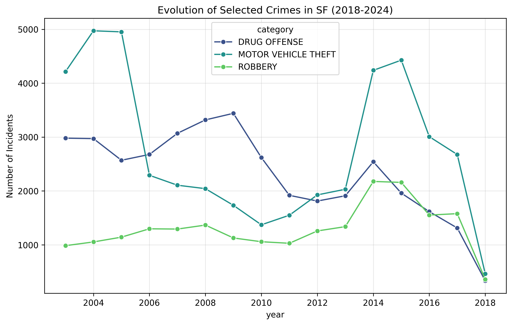

The City That Changed: San Francisco’s Pandemic Metamorphosis
San Francisco has always been a city of rapid shifts. From the Gold Rush to the Tech Boom, its streets reflect the pulse of global changes. However, nothing prepared the city for 2020. Using data from the SFPD Incident Reports (2018-2025), we can trace how crime didn't just disappear during the lockdowns—it transformed.
To understand this, we must look beyond raw numbers and interpret the patterns through the lens of urban mobility and enforcement practices.

A Geographic Divide
The "ghost town" effect of 2020 was not uniform. While the Financial District stood empty, other neighborhoods saw a concentration of activity. However, as noted in the research by Richardson et al. (2019), we must be careful: crime data is often a proxy for police presence.
The Daily Rhythm
Beyond the "where", we must ask "when". Crime has a biological clock. In a normal city, incidents peak with the nightlife and the evening commute. The pandemic disrupted this 24-hour cycle, shifting the daily rhythm of the city's streets.
Reflecting on the Data
This "short data story" shows that crime is not a static phenomenon. It responds to policy, mobility, and socioeconomic strain. While our visualizations show clear trends, they also serve as a reminder of the responsibility of the analyst: we are not just showing "crimes", we are showing "reports". As Segel & Heer argue, a good narrative visualization balances the author’s message with the reader’s ability to explore—reminding us that behind every data point is a complex human story.
References:
- SFPD Incident Reports: 2018 to Present. SF Open Data.
- Segel, E., & Heer, J. (2010). Narrative Visualization: Telling Stories with Data.
- Richardson, R., et al. (2019). Dirty Data, Bad Predictions.